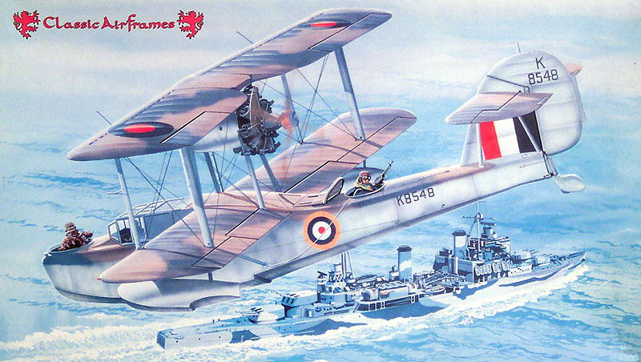
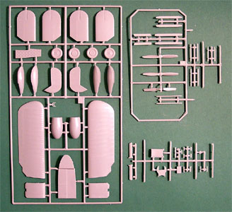
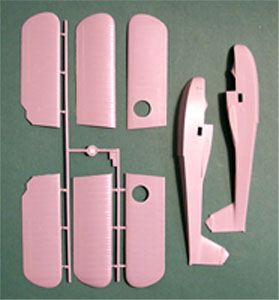
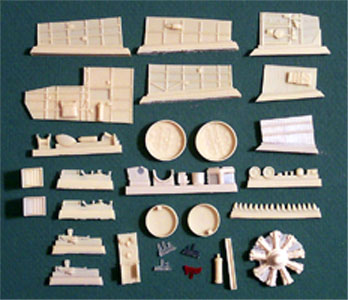
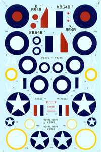

{kind=link}
{kind=link}
{kind=link}
{kind=link}
{kind=link}


Classic Airframes 1/48 Scale Supermarine Walrus

Kit #451 MSRP $44.95
Images and text Copyright � 2004 by Matt Swan
Developmental Background
The Walrus was rather rectangular in outline and it was difficult to believe that it came from the same stables as the elegant Spitfire. R.J. Mitchell designed this flying boat in 1933 as an improvement to the already-in-production Supermarine Seagull, incorporating a pusher rather than tractor propeller. The Prototype designated the Seagull V had one 635hp Pegasus IIM2 engine, it was initially built as a private venture, this then became a production model for RAAF. The first production models in 1935 were the Walrus Mk I, redesignated from the Seagull V for service with the RAF and FAA.
Australia was the first country to order the Seagull V and it entered service with the Royal Australian Air Force in 1935. It was primarily intended that the aircraft would operate from Royal Australian Navy cruisers as a catapult-launched reconnaissance and SAR (Search And Rescue) aircraft. Once the aircraft had completed its mission it would land on the water along side the ship and be craned aboard onto its catapult for the next mission. The Seagull V entered service with Britain's Fleet Air Arm in 1936, but in British service it was known as the Walrus. To its crews, however, it was widely known as the Shagbat.
With a crew of three or four, the Walrus had a maximum speed 135mph and a range of 600 miles. Its service ceiling was 18,500 feet. It served in all sectors of the British Empire and during World war two was used for a variety of roles including as a Bomber in East Africa, fitted with ASV radar and used for antisubmarine patrols but mostly used for reconnaissance and Air sea rescue. There were at least 5 confirmed enemy submarines sunk or damaged by Walruses during WWII, including the Vichy French submarine Poncelet which was bombed by Walrus L2268 of 700 squadron (HMS Devonshire) and attacked by HMS Milford on 7 November 1940 off the Cameroons.
A Total of 765 Walrus's were built as well as 26 seagull V's between 1936 and 1944. Only three Walruses/Seagulls are known to exist in the world today, in the Fleet Air Arm Museum (UK), RAF Museum Hendon (UK) and the RAAF Museum (Australia). Despite its appearance, the Walrus established a solid reputation for reliability and ability to withstand damage.
The Kit
While Classic Airframes is an American based company this kit is manufactured in the Czech Republic and bears all the classic evidence of those origins such as slightly heavy sprue gates and grade of plastic and total lack of alignment studs. The box is fairly large with washed out looking box art but is packed full of good stuff. This is a mutli-media kit in that there are several sprues of injection-molded pieces done in a medium gray polystyrene, a pair of vacuformed canopies and a bag chock full of resin detail parts.
We have three trees comprising 65 individual parts. All the exterior parts display crisply engraved panel lines on the fuselage areas as well as nice rib definition on the wing areas. The texture is good meaning that there is no evident Orange Peel effect on any of the larger pieces as is sometimes seen with kits coming from the Czech Republic. I don�t see any nasty injector pin markings, sinkholes or serious flash on any of the parts. The fabric texture of the wings is extremely well done and seems to accurately reflect the different surface tensions present in the canvas covering of the different flying surfaces from the time period. The fuselage sides and wing panels test fit well. They seem to be of the same length and width and have no evident warpage going on and the engraved control surface lines match up nicely.



You may click on the above images to view larger pictures
There is a single sealed bag stuffed full of resin parts. These are all done in a medium tan resin and look to have been allowed to cure fully before being packaged. It really irritates me when the manufacturer is in a hurry and stuffs partially cured resin pieces into a bag and causes them to bend and warp. There is some flash on these parts and most of them have large pour blocks as well. The detail level is very good on these pieces with excellent work on the sidewall panels and seats. Among the nicer features is a single-piece Bristol Pegasus engine and a pair of simply gorgeous machine guns. Among the various blocks of parts is a single block with sixteen little oblong studs; these are rigging mounting blocks to be attached to the wings in various places. A neat item and the first time I have ever seen them offered as separate pieces. We are not done yet � there is something else in this bag and that is a set of colored transparent resin marker lights in clear, red and green. All together there are 49 pieces in this bag.
Last but not least are the clear parts, we have a single vacuform molding that contains two slightly different main canopy pieces; one standard and one featuring a flip-forward panel over the right side of the cockpit. Also included with the kit is a small plain sheet of clear polystyrene and you are instructed to cut some small side windows out of that material. In clear parts we have four pieces, kind of. Overall parts count in the box now stands at 118 assorted pieces not including the rigging that the modeler will have to provide.
Decals and Instructions

There is no shortage of literature in this package. I have an advertisement here for the Squadron Signal Fleet Air Arm publication followed by a four panel decal and painting guide that provides very extensive instructions for four different aircraft. While this entire sheet is done in black and white there are plenty of color codes provided. Classic Airframes has provided us with an actual booklet for assembling this kit. It consists of fourteen pages of instruction beginning with a short history of the aircraft. Complete parts schematics are included and many of the exploded view construction steps are illustrated �full size� with lots of construction tips and color call outs. Correct strut placement measurements and angles are included in the appropriate places along with full size wing dihedral patterns and rigging instructions. The engine on the Walrus was installed at an angle to compensate for rotational thrust and the instructions spend a bit of time on this aspect to ensure you are able to install it correctly. Overall this has got to be one of the most comprehensive instruction booklets I have ever had the pleasure to review.
As I mentioned earlier there are markings for four different aircraft included. You can click on the image to the right for an enlarged view. These are for two British, one Australian and one American aircraft. The print registry and color density of the decals looks to be excellent, most of the roundels are provided as multi-piece assemblies and the overall impression is very good. One thing that is lacking, service stencils � there are none whatsoever. These decals are printed by Micro Scale and appear to be properly thin and from previous experience I would assume that they will react well to most setting solutions.
Conclusions
This is a wonderful and complex kit. It is not for the beginner by any means. The parts are well engineered, have a very nice level of detail and seem to fit together well. Historically there seems to have been a shortage of good 1/48 scale WW2 Seaplane kits and this starts to fill that hole. There are a few items on the aftermarket that could be added to this although most of them are not necessary. Whiskey Jack Decals a Canadian company that deals in very obscure aircraft makes some alternative decals for this bird, as does FCM. Classic Airframes even offers additional decals. Cutting Edge has two different mask sets available and Engines and Things offers a Bristol Pegasus engine (this is in that �not necessary� category). I highly recommend this kit and next time Classic Airframes does a production run on it you should consider picking up at least one.